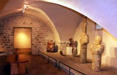
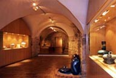
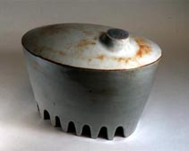
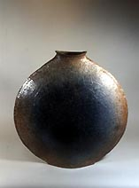

| XIXth International
Biennale of Contemporary Ceramics - Vallauris
1st July - 20th November 2006
Vallauris, situauated near Cannes, has been a traditional French
pottery region since ancient times. The area flourished at the end
of the 19th century, when it was connected by rail to the rest of
the country. Picasso worked with clay at Ramie Madoura’s workshop
here from 1946–48 and returned to work in clay on a regular
basis. The region also attracted other artists including Marc Chagall
and the actor Jean Marais. The city of Vallauris now hosts the International
Biennale of Contemporary Ceramics.

The
list of winners since 1966 reads like a Who's Who of international
ceramics: 1966: Yves Mohy (France; pictured below), 1968 Hans Hedberg
(Switzerland), 1970 Roger Capron (France), Nicole Giroud (France),
1972 Anikki Hovisaari (Finland), Rut Bryk (Finland), Paul Envals
(Finland), 1974 Daniel Pontoreau (France), 1976 Carlos Carle (Argentine),
1978 Vlastimic Kvetensky (Czechoslovakia), 1980 Alain Bresson (France),
1982 Gilbert Portanier (France), 1984 Sutton Taylor (UK), Susan
Eisen (USA), 1986 Casanova Claudi (Spain), 1988 Marius Musarra (France),
1990 Karen Müller (Germany), 1992 Andrea Hylands (Australia),
Werner Nowka (Germany), 2000 Bertozzi Et Casoni (Italy), 2002 Michael
Cleff (Germany; pictured left).
The 19th International Biennale of Contemporary Ceramics of Vallauris
will take place from 1st July to 20th November 2006. Any artist
presenting completely new work may take part. For 2006, there are
three sections:
- the Container
- Design
- Architectural/ Sculptural/ Conceptual Ceramics
Each
participant may present one work per section or two works if he
registers for only one section. The prizes will be the Grand Prize
of the Town of Vallauris of an amount of € 10,000 and one prize
per section of an amount of € 3,000. Various others prizes
will be awarded, including among others, a special “Under
thirty-five years old” prize (on January 1st 2006).
As part of this Biennale, a competition, reserved for members of
the European Union, is being organised under the aegis of the Municipality
of Vallauris Golfe-Juan by a Committee of the Biennale meeting at
the town hall.
Left: Yves Mohy
Deadline for application: 31st of December 2005.
Application form: French-English
Rules: English/French/German/Spanish/Italian
For further information please ring +33-4-93 64 34 67 or send an
e-mail to: biennale.vallauris@wanadoo.fr.
Internet: http://biennale.vallauris.free.fr/
(several languages).
More Articles |